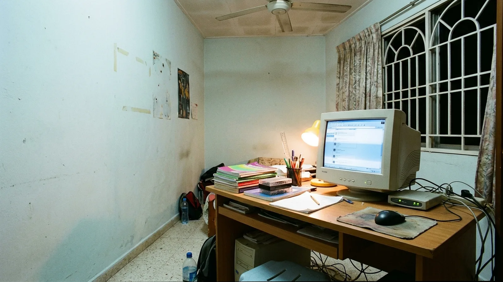
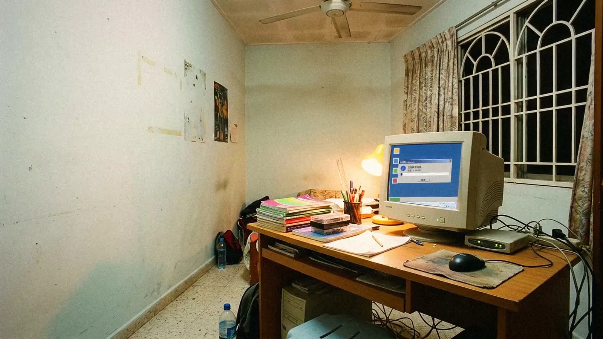
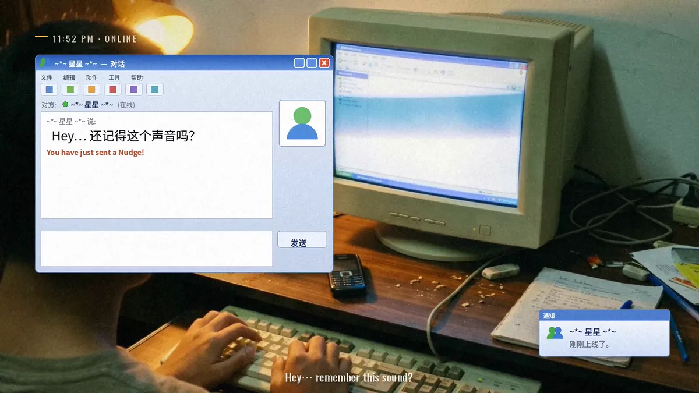
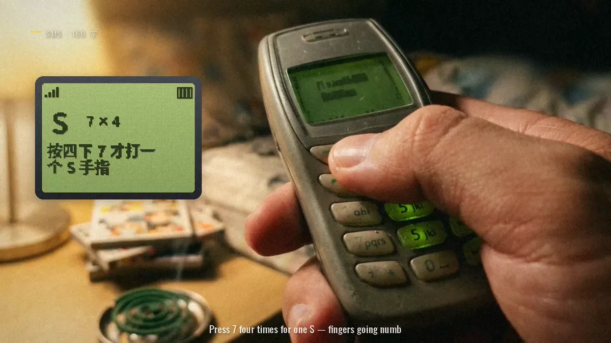
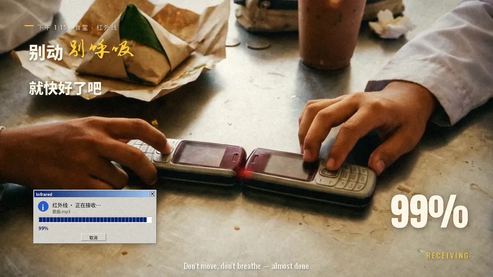
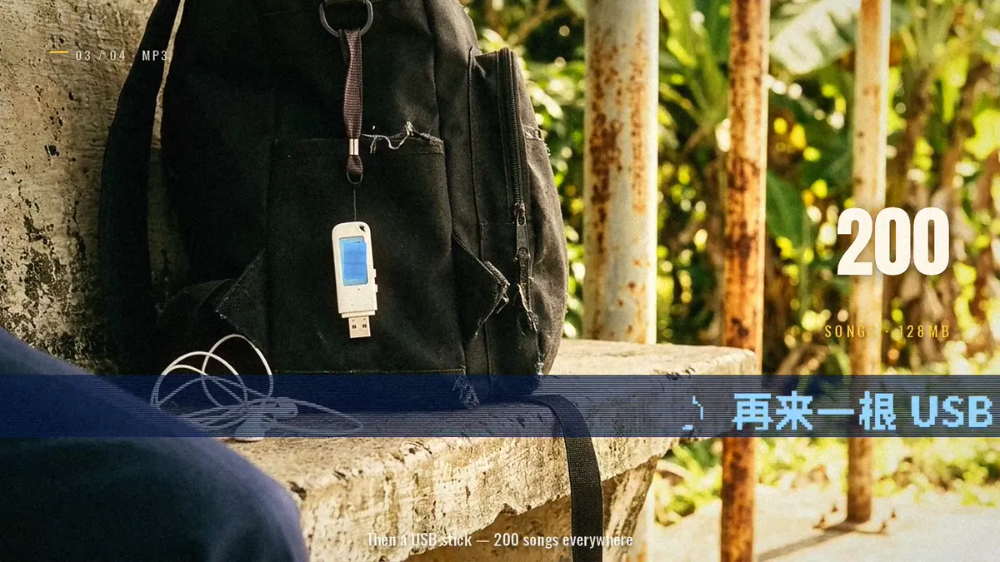

NUDGE ME · 右下角
MV, for everyone who grew up on dial-upStudio original, not client work · 3:18Melvin directed it; AI tools made the song, stills and clips. Below: what the tools gave us, and what we made of it.
Melvin directed it; AI tools made the song, stills and clips. Below: what the tools gave us, and what we made of it.
Left, the clip as the AI tool made it. Right, the same shot in the film: graded, and the lyric lights up one character at a time, like the streetlights coming on. Tap either to play them again.
Every frame gets the same memory grade: softer shadows, warmer light, a glow on the highlights and fine grain, so an AI still reads like a photo print from 2005. Drag across the picture.


The Chinese line lives on the screen it sings about, in that screen's own type; the English runs underneath.




Hey… 你还在吗？
Same craft, cut for a phone: a 12 to 30 second vertical film for Reels and TikTok, with your shop, your product and your words on screen. Message FILM with what you sell and a rough budget. We reply the same day, and a written plan and quote follow.
WhatsApp FILM